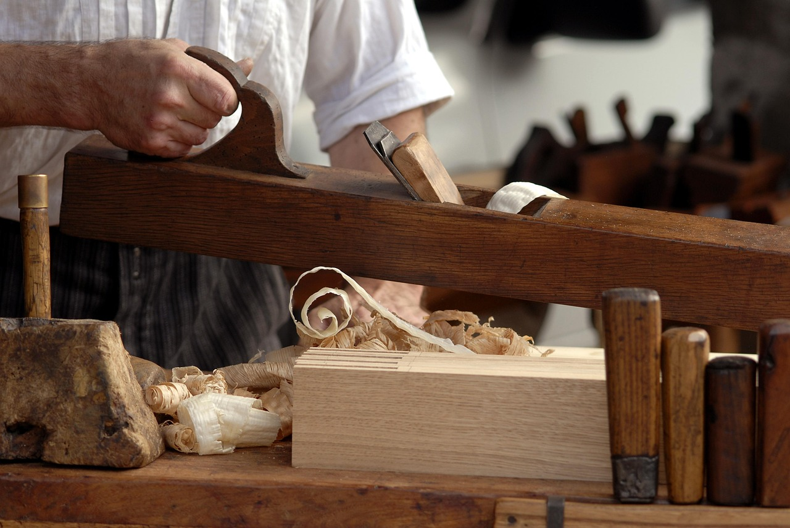
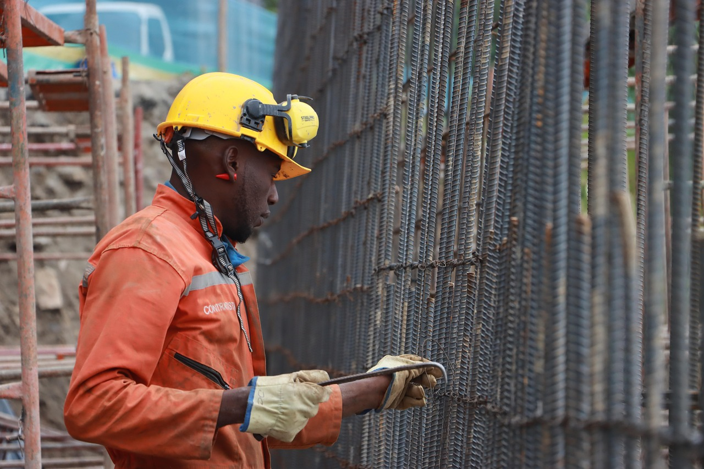

What Rough Carpentry Actually Is
Rough carpentry is construction carpentry that happens before the pretty layers: framing adjacent work, blocking, backing, subfloors, exterior sheathing, stair rough-ins, soffits, basic structures, temporary bracing, and other “make the job possible” carpentry. Depending on the crew, it can also include formwork (concrete forms), decks and exterior structures, and repairs that keep a site moving.
People confuse rough carpentry with framing. They overlap, but rough carpentry is broader: it’s the “get it built, get it strong, get it ready for the next trade” lane. The standards are still real — square, plumb, correct layout — but the focus is production and function more than showroom-level appearance.


What You Spend Time Doing
Rough carpentry is a “keep the project moving” specialty. Your day is often driven by what’s next: what needs backing for drywall, what needs blocking for cabinets, what needs rough openings fixed, what needs a platform built, what needs bracing before inspection, what needs repair so other trades can install cleanly.
- Layout + marking: lines, centers, rough openings, backing locations, stair rough, deck ledger and footing layout.
- Build + install: blocking, nailers, subfloors, sheathing, soffit frames, chases, platforms, temporary structures.
- Material + site movement: staging lumber/sheets, fastener management, cleanup, and working around other trades.
- Fixes + improvisation: correcting earlier issues, adapting to warped material, weird geometry, and jobsite surprises.
Rough carpentry rewards people who can stay calm in imperfect conditions and still keep accuracy stable. “Messy environment” is not a phase — it’s the default setting.
Where the Pressure Comes From
Pressure is mostly pace + coordination. Rough carpentry sits in the middle of the construction sequence. If you’re late or wrong, other trades get stuck — and then everyone is annoyed in stereo.
There’s also safety pressure: saws, nail guns, ladders, uneven ground, and fatigue. Rough carpentry is often done while the site is active, which means you’re working around noise, forklifts, deliveries, and constant change.
What Traits Actually Matter
Rough carpentry success is less about loving wood and more about tolerances — physical, mental, and environmental — plus your ability to keep moving.
- Problem tolerance: you don’t melt down when walls aren’t square and lumber isn’t perfect.
- Momentum mindset: you can produce all day without getting precious about every detail.
- Accuracy under speed: “fast” is required, but “wrong” is expensive.
- Physical durability: lifting, carrying, awkward positions, and repetitive tool work are normal.
- Coordination: you can communicate with other trades and adjust plans without ego fights.
Rough carpentry is the craft of making imperfect reality usable. If that idea sounds satisfying, you’re in the right neighborhood.
Who Should Probably Avoid It
No judgment — just honesty. This lane is a poor fit if the core conditions drain you more than they sharpen you.
- You need clean/quiet environments: dust, noise, weather, and jobsite chaos are normal.
- You hate physical strain: carrying sheets, lifting material, ladders, kneeling, repetitive fastening.
- You obsess over perfect cosmetics: rough work is about function and sequence; perfectionism can slow you into misery.
- You struggle with quick pivots: plans change when deliveries shift or inspections fail; adaptability matters.
If you want carpentry but prefer slower precision and visible standards, compare with finish carpentry or cabinet making. If you want pure structural focus, compare with framing.
Next Step: Get a Signal, Then Compare
If rough carpentry sounds right, don’t decide on vibes. Use the diagnostic, then compare against other carpentry paths so you’re choosing the environment that fits you.
Run the Rough Carpentry Fit Diagnostic first. Then compare paths from the Carpentry Hub or step back to the Trades Hub. If you want the full map, start at the homepage.